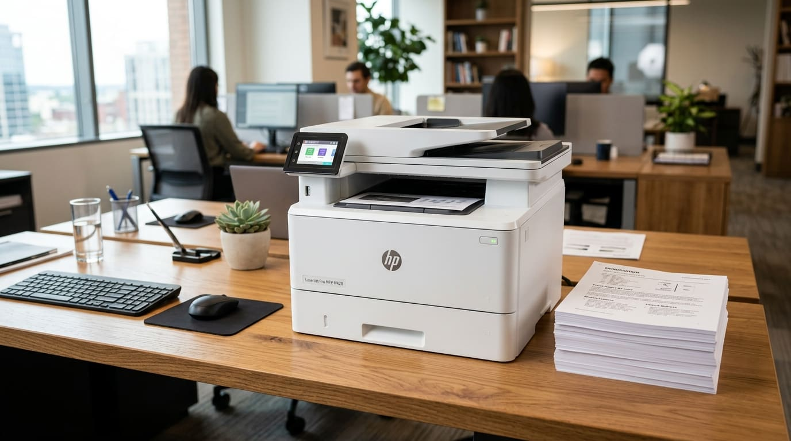

Formateo de computadores, licencias y periféricos en Bogotá
Instalación limpia con respaldo de tu información, licencias originales y equipamiento para tu escritorio o tu setup gamer.

Formateo y licencias en Bogotá
Hacemos formateo de computadores en Bogotá con respaldo seguro de tu información, instalación limpia de Windows 10 u 11 Pro y licencias originales de programas y suites de productividad. También te asesoramos en la venta de periféricos para tu estación de trabajo o setup gamer.
Atendemos a domicilio en Bogotá o por soporte remoto inmediato. Escríbenos tu barrio o localidad para confirmar la cobertura.
Qué necesitas instalar o comprar
Tres paradas: dejar el sistema limpio, tenerlo en regla y equiparlo bien.
Formateo e instalación de programas
Para equipos con virus, lentitud acumulada o un sistema que ya no responde.
- Respaldo de tu información antes de tocar nada.
- Instalación limpia de Windows 10 u 11 Pro y de los programas que usas.
- Resultado: un sistema sin virus ni ralentizaciones.
Software con activación original
Licencias genuinas, sin cracks ni activadores riesgosos.
- Sistemas operativos: Windows 10 Pro, Windows 11 Pro y Windows Server.
- Productividad: Microsoft 365 para uso personal, familiar y empresarial.
- Seguridad: antivirus ESET, Kaspersky y Bitdefender.
- Diseño y cálculo: AutoCAD, Revit, SolidWorks y Adobe Creative Cloud.
Periféricos y almacenamiento
Se instalan, se configuran y se dejan funcionando, no solo se venden.
- SSD NVMe M.2: marcas como Samsung o WD, según compatibilidad.
- Teclados mecánicos y ratones gaming o ergonómicos.
- Monitores 4K o de alta frecuencia, de marcas como LG y ASUS.
Dinos qué tienes
Escríbele a Pedro las especificaciones de tu equipo o el programa que necesitas y te cotiza con la activación incluida.
Otras líneas
Mantenimiento y reparación
Limpieza, pasta térmica, optimización, reparación de fallas y upgrades de SSD, memoria y refrigeración.
Ver la líneaPC a la medida y GPU
Computadores armados según lo que haces y tu presupuesto, y asesoría para elegir tu tarjeta gráfica.
Ver la líneaImpresoras y soporte remoto
Impresoras de tinta continua y láser, y ayuda inmediata por AnyDesk sin que tengas que moverte.
Ver la líneaCuéntale a Pedro qué le pasa a tu equipo
Cuéntale qué le pasa a tu equipo. Diagnóstico honesto y presupuesto claro, sin compromiso.